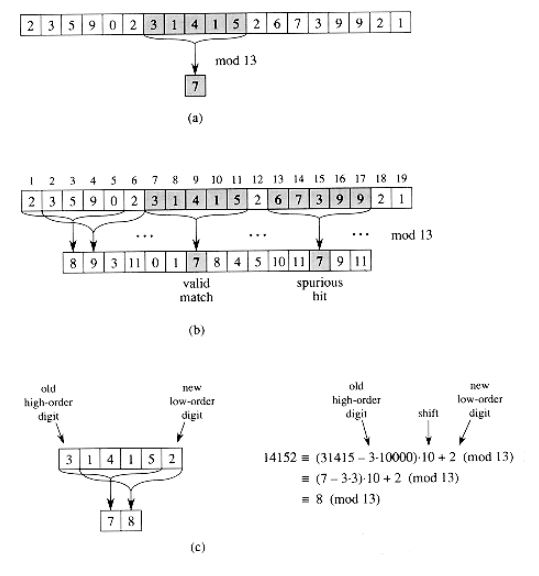

Rabin-Karp string searching algorithm calculates a numerical (hash) value for the pattern p, and for each m-character substring of text t.
Then it compares the numerical values instead of comparing the actual symbols.
If any match is found, it compares the pattern with the substring by naive approach.
Otherwise it shifts to next substring of t to compare with p.
We can compute the numerical (hash) values using Horner’s rule.
Lets assume, h0 = k h1 = d(k − p [1].dm−1)+ (p [m + 1])
Suppose, we have given a text t = [3, 1, 4, 1, 5, 2] and m = 5, q = 13;
t0 = 31415
So t1 = 10( 31415 - 105−1.t[1] ) + t[5+1]
= 10( 31415 − 104.3 ) + 2
= 10( 1415 ) + 2 = 14152
Here p and substring ti may be too large to work with conveniently. The simple solution is, we can compute p and the ti modulo a suitable modulus q.
So for each i, hi+1 = (d ( hi − t[i + 1] .dm−1 ) + t[ m + i + 1] ) mod q
The modulus q is typically chosen as a prime such that d.q fits within one computer word.
Algorithm
1. Compute hp (for pattern p)
2. Compute ht (for the first substring of t with m length)
3. For i = 1 to n − m
4. If hp = ht
5. Match t[i . . . .i + m] with p, if matched return 1
6. Else
7. ht = (d( ht − t[i + 1] .dm−1)+ t[m + i + 1]) mod q
8. End
Suppose, t= 2359023141526739921 and p = 31415,
Now, hp = 7 (31415 = 7 (mod 13)) substring beginning at position 7 = valid match

A text string. A window of length 5 is shown shaded. The numerical value of the shaded number is computed modulo 13, yielding the value 7.
The same text string with values computed modulo 13 for each possible position of a length-5 window.
Assuming the pattern P = 31415, we look for windows whose value modulo 13 is 7, since 31415 7 (mod 13). Two such windows are found, shown shaded in the figure.
The first, beginning at text position 7, is indeed an occurrence of the pattern, while the second, beginning at text position 13, is a spurious hit.
Computing the value for a window in constant time, given the value for the previous window.
The first window has value 31415.
Dropping the high-order digit 3, shifting left (multiplying by 10), and then adding in the low-order digit 2 gives us the new value 14152.
All computations are performed modulo 13, however, so the value for the first window is 7, and the value computed for the new window is 8.